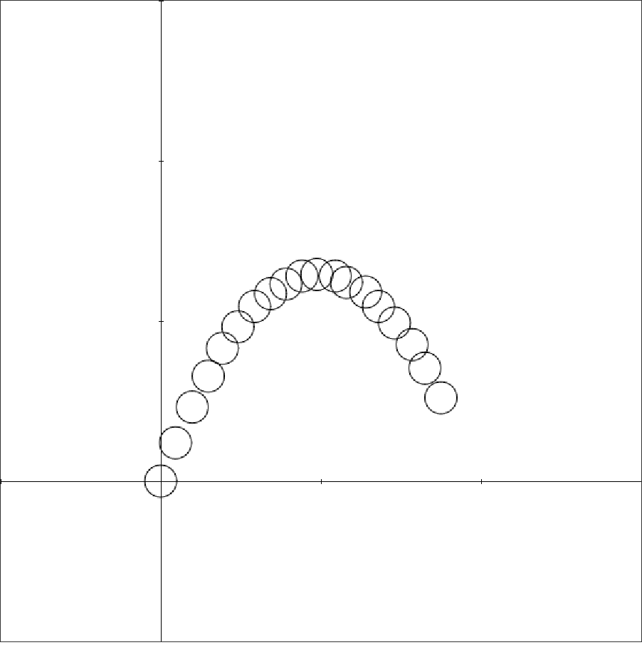

<!DOCTYPE html>
<html>
    <head>
        <meta charset="utf-8">
        <meta name="apple-mobile-web-app-capable" content="yes" />
        <meta name="apple-mobile-web-app-status-bar-style" content="black-translucent" />
        <meta name="viewport" content="width=device-width, initial-scale=1.0, maximum-scale=1.0, user-scalable=no">

        <title>Modèles de chute</title>
        <link rel="stylesheet" href="reveal/css/reveal.min.css">
        <link rel="stylesheet" href="reveal/css/theme/microalg.css" id="theme">

        <!-- If the query includes 'print-pdf', use the PDF print sheet -->
        <script>
            document.write( '<link rel="stylesheet" href="reveal/css/print/' + ( window.location.search.match( /print-pdf/gi ) ? 'pdf' : 'paper' ) + '.css" type="text/css" media="print">' );
        </script>

        <!--[if lt IE 9]>
        <script src="reveal/lib/js/html5shiv.js"></script>
        <![endif]-->

        <script type="text/javascript" src="http://ajax.googleapis.com/ajax/libs/jquery/1.8.2/jquery.min.js"></script>
        <link rel="icon" href="visuels/logo_microalg.ico" />

        <script type="text/x-mathjax-config">
        MathJax.Hub.Config({
            extensions: ["tex2jax.js","fp.js"],
            MathMenu: {
                showLocale: false,
            },
            jax: ["input/TeX","output/HTML-CSS"],
            tex2jax: {
                inlineMath: [['$','$']],
                displayMath: [['$$','$$']],
                }
            });
        </script>
        <script type="text/javascript" src="mathjax/MathJax.js?locale=fr"></script>
    </head>

    <body>
        <div class="reveal">
            <div class="slides">
                <section data-markdown data-separator="^\n----*\n" data-vertical="^\n\n" data-charset="utf-8">

                    <script type="text/template">
&nbsp;

# Modèles de chute

&nbsp;

&nbsp;

&nbsp;

<div style="text-align: right; font-size: 75%;">Christophe Gragnic, fév. 2016</div>
<div style="text-align: right;">Lycée Mandela à Nantes</div>
<div style="text-align: right; font-size: 75%;"><a href="http://galerie.microalg.info/profgra:peda:chute">Page du TP</a></div>

---

# Qui sommes-nous ?

* Vous
    * établissement
    * expérience en algorithmique
    * logiciel utilisé
* Moi
    * prof de maths au lycée Carcouët
    * bcp d’informatique (≠ bureautique !) depuis 2005
    * joindre maths et info depuis :
        * 2009 avec l’algo en seconde
        * 2012 avec ISN (spé de terminale S) et BTS SIO (info)

---

# Plan de la présentation

* Présentation rapide de MicroAlg
* Un TP de physique (terminale S)
    * mise en place du décor
* Un TP d’algorithmique (tous niveaux)
    * prise en main
    * algorithmes à compléter
* Conclusion et discussion

---

# MicroAlg

Qu’est-ce ?

* Langage de programmation pour **grands débutants**…
* …et suite d’**outils** pour l’utiliser.
* Créé dans un but pédagogique
* Encore jeune mais déjà capable.
* **Première marche** avant un langage professionnel.
* Sous-première marche : le **Club des Expressions**.

---

# MicroAlg

Quelques fonctionnalités :

* En **français** avec **peu de mots-clefs**
* « Pseudo-code exécutable »
    * pseudo-code ?
* Programmable en déplaçant des **blocs**
    * comme Scratch
* Version **web** ou **locale**
    * [microalg.info](http://microalg.info)
* Intégrable à d’autres sites ou systèmes

---

# MicroAlg

* Système de publication : la « **galerie** »
    * web, un navigateur connecté suffit
    * enseignants
    * apprenants
    * diverses configuration des échantillons
        * blocs
        * graphiques
        * code caché

---

# Un TP de physique

* Préalable théorique, le PFD : $\Sigma \vec F = m \vec a$
    * projeté sur les axes (horizontal et vertical) :
        * $m a_x(t) = 0$
        * $m a_y(t) = -P$
    * $P = m × a_G$ donc :
        * $m a_x(t) = 0$
        * $m a_y(t) = -m × a_G$
    * c’est-à-dire :
        * $a_x(t) = 0$
        * $a_y(t) = -a_G$

---

# Un TP de physique

* À résoudre (en temps continu) :
    * $a_x(t) = 0$
    * $a_y(t) = -a_G$
* intégré une fois (avant le cours de maths !) :
    * $v_x(t) = \text{cste} = v_x(0)$
    * $v_y(t) = -a_G × t + \text{cste} = -a_G × t + v_y(0)$
* et encore une fois :
    * $x(t) = v_x(0) × t$
    * $y(t) = -\frac{a_G}{2} × t^2 + v_y(0) × t$
* avec $t = \frac{x}{v_x(0)}$
    * $y=-\frac{a_G}{2v_x(0)^2} × x^2 + \frac{v_y(0)}{v_x(0)} × x$

---

# Un TP de physique

* Exploitation du film d’une balle lancée :


# Un TP de physique


# Un TP de physique


# Un TP de physique


# Un TP de physique


# Un TP de physique


# Un TP de physique


---

# Un TP de physique

* Import dans un « super-tableur »
    * Generis/Cineris (sinon [Regressi](http://jean-michel.millet.pagesperso-orange.fr/regressi.html))
* Étalonnage des positions
    * quel point de l’image est l’origine du repère
    * correspondance distance à l’écran / distance réelle
* Recueil des coordonnées du mobile au cours du temps
* Modélisations de $y=f(x)$, de $v_x(t)$, et de $v_y(t)$ par Généris
    * on impose un type de fonction (polynôme de degré 2 ou 1)
    * $y = -0,92 x^2 + 1,8 x$
    * $v_x(t) = 2,22$
    * $v_y(t) = -9,1 t + 4,64$

---

# Un TP de physique


---

# Un TP de physique


---

# Un TP de physique

* Extraction et calculs :
    * $a_x$ et $a_y$
    * $v_x(0)$, $v_y(0)$
    * les coefficients de la parabole théorique :
    * $y = -\frac{a_G}{2 v_x(0)^2} x^2 + \frac{v_y(0)}{v_x(0)} x$
* Confrontation avec la parabole relevée :
    * $y = -0,92 x^2 + 1,8 x$

---

# Prise en main de la galerie

* Choix **pseudo**
    * parfum de glace (une ou deux boules)
* **Page mère**, que chaque élève copie
    * simples boutons
* **Modification mineure** d’un programme
    * afficher son pseudo
    * <br>

---

# Notifications de la galerie


---

# Algo valeurs recueillies

* Squelette de programme à modifier
* <br>

---

# Algo valeurs recueillies

* À corriger :
    * une erreur laissée (qques indices)
    * insérer les valeurs recueillies
    * ajuster le repère et les points

---

# Algo valeurs recueillies

* Indices au compte-gouttes pour différencier
* Idées d’indices :
    * inspecter le déroulement avec des affichages
    * inspecter le `Tant_que` avec un affichage
    * afficher la variable testée dans le `Tant_que`
    * aide sur la syntaxe de MicroAlg
        * `Affecter_a`
        * addition

---

# Notifications de la galerie


---

# Ajustement du repère


---

# Ajustement du repère



---

# Taille cercles


---

# Taille cercles


---

# Algo en temps discret

* Épicentre du TP
* Squelette de programme à modifier
* <br>

---

# Algo en temps discret


---

# Algo en temps discret

* À corriger :
    * Appliquer le PFD…
    * … avec des indices !

---

# Algo en temps discret

* Idées d’indices :
    * quel est le type du mouvement avant votre modification ?
    * si on veut que $v_x$ et $v_y$ ne soient pas constantes…
    * …et comment mettre à jour ces variables ?
    * $V = \frac{D}{T}$, donc $D = …$

---

# Notifications de la galerie


---

# Algo en temps discret


---

# Algo en temps discret

* Extase
* On ne tape pas l’équation de la parabole, et pourtant…
* …

---

# Algo en temps discret

Mais mauvais départ !

* Dans les jeux simples, pas de volonté de coller au réel.
* L’unité habituelle n’est que le pixel…
* …pour la position…
* mais aussi pour la vitesse !
    * alors qu’on devrait parler de pixel/image.
* Utiliser $\Delta x$ et $\Delta y$ plutôt que $v_x$ et $v_y$.
    * c’est-à-dire `dx` et `dy` plutôt que `vx` et `vy`.
* Embrouille inextricable à cause de `(+ x vx)` et `(+ y vy)`

---

# Suite du TP

* Inachevé
    * Pas d’affichage de la parabole modèle
    * Pas de superposition des trois (j’avais visé haut)
* Programmation de la fin devant la classe, avec leur aide.
* Email personnel avec indications pour finir pendant les vacances.
* 6 sur 32 ont modifié leur page, d’autres ont essayé sans modifier.

---

# Conclusions

* Prise en main de la galerie : fastidieux.
    * Sur deux séances, sauf si prise en main déjà faite.
* À rapprocher de la méthode d’Euler
    * Résolution d’équations différentielles
    * Assimilation de la courbe à sa tangente
    * Traditionnellement pour *exp* et *ln*

---

&nbsp;

# Merci

* Stéphane Choimet pour sa confiance
* Jean-Philippe Rouquès pour ses précieuses suggestions

---

&nbsp;

# Questions

---

&nbsp;

---

# Poubelle


* indices sur plusieurs pages, sur place: oralement
* revenir aux pixels à la fin de l’année en physique
* donner une tâche par groupe
* copies généris? Généraliste pour les sciences physiques et chimiques


</script>
                </section>
            </div>
        </div>

        <script src="reveal/lib/js/head.min.js"></script>
        <script src="reveal/js/reveal.min.js"></script>

        <script>
            // Full list of configuration options available here:
            // https://github.com/hakimel/reveal.js#configuration
            Reveal.initialize({
                controls: true,
                help: true,
                progress: true,
                slideNumber: true,
                history: true,
                center: false,

                theme: Reveal.getQueryHash().theme, // available themes are in /css/theme
                transition: Reveal.getQueryHash().transition || 'none', // default/cube/page/concave/zoom/linear/fade/none

                // Optional libraries used to extend on reveal.js
                dependencies: [
                    { src: 'reveal/lib/js/classList.js', condition: function() { return !document.body.classList; } },
                    { src: 'reveal/plugin/markdown/marked.js', condition: function() { return !!document.querySelector( '[data-markdown]' ); } },
                    { src: 'reveal/plugin/markdown/markdown.js',
                        condition: function() { return !!document.querySelector( '[data-markdown]' ); },
                        // All list items are fragments, thanks to
                        // http://stackoverflow.com/questions/13705848/fragments-in-reveal-js-using-markdown?rq=1#15354240
                        callback: function() {
                            Array.prototype.forEach.call(document.querySelectorAll('ul > li, ol > li'),
                            function(ele){ if (ele.className != 'nofragment') ele.className = 'fragment';});
                        } },
                    { src: 'reveal/plugin/zoom-js/zoom.js', async: true, condition: function() { return !!document.body.classList; } },
                    { src: 'reveal/plugin/notes/notes.js', async: true, condition: function() { return !!document.body.classList; } },
                    { src: 'plugin/math/math.js', async: true }
                ],
                math: {
                        mathjax: 'mathjax/MathJax.js',
                        config: 'TeX-AMS_HTML-full'},
                minScale: 1,
                maxScale: 1
            });
        </script>
    </body>
</html>
